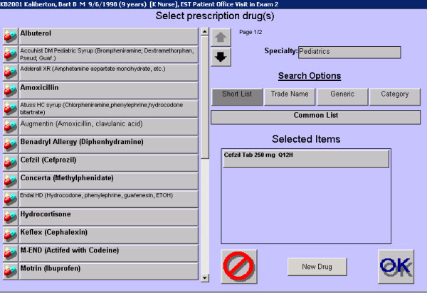

|
Description
The screens used to select various treatments are all very similar. This screen is used to search for and select treatments. Multiple treatments of the same treatment type can be selected from the list and each will appear in the Selected Items box.
Selecting the Desired Treatment
The Select Treatment screens allow the user to select a treatment by:
- Selecting it from the Common short list
- Selecting it from the current user's Personal short list (if one exists)
- Searching by description or codes
- Searching by category
 NOTE: When searching for a treatment, EncounterPRO defaults to display only those matching treatments that are assigned to the current user's specialty. If the treatment you are searching for is not assigned to your specialty, select the small Specialty button over the Search Options to view all matching items across the entire database. Some screens, as in the example screen below, have a long toggle bar underneath the Search Options that you can use to switch between the common and speciatly lists. NOTE: When searching for a treatment, EncounterPRO defaults to display only those matching treatments that are assigned to the current user's specialty. If the treatment you are searching for is not assigned to your specialty, select the small Specialty button over the Search Options to view all matching items across the entire database. Some screens, as in the example screen below, have a long toggle bar underneath the Search Options that you can use to switch between the common and speciatly lists.
How to Access This Screen
Access this screen by:
- Selecting one of the treatment type buttons on the Any Treatment menu from the Patient Chart screen
- Selecting one of the treatment type buttons on the menu that appears when you select New Treatment from a Treatment List screen
- Selecting one of the treatment type buttons on the Any Treatment menu that appears when you select the patient name bar from the Treatment Room screen
Screen Example

Want to Learn More?
Related Solutions
Concept: Short Lists
Concept: Common vs. Personal Lists
How to: Order Treatments
How to: Modify a Short List
How to: Create a Personal Treatment List
How to: Set the Default Treatment Mode for a Specific Treatment
|